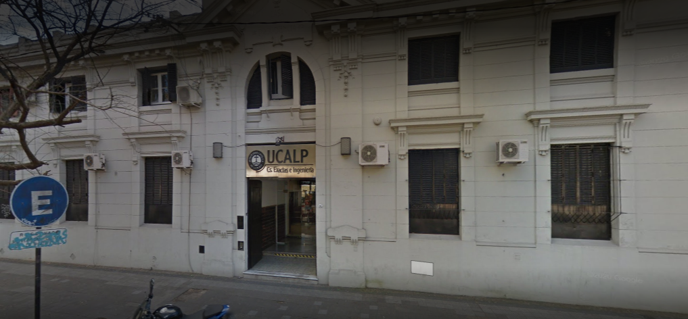
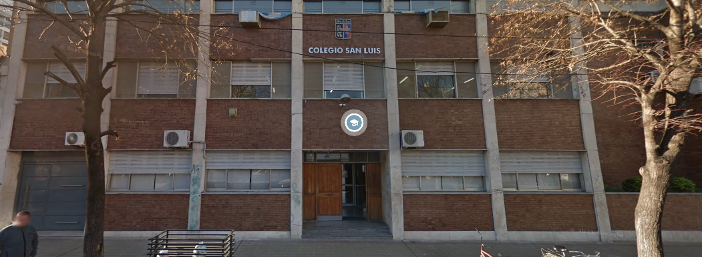

Te invitamos a ver las facultades que conforman esta universidad junto con sus respectivas carreras y un mapa que señala cada facultad
Presencial
Arquitectura (4 años)
Licenciatura en Diseño de Interiores (4 años)
Licenciatura en Diseño Visual (4 años)
Presencial
Escribanía (2 cuat.)
Martillero y Corredor de Comercio (5 cuat.)
Lic. en Criminalística (4 años)
Lic. en Ciencia Política y Relaciones Internacionales (4 años)
Lic. en Seguridad (4 años)
Abogacía (5 años)
Cursada a Distancia
Martillero Público y Corredor de Comercio (5 cuat.)
Posgrados
Especialización en Derecho Administrativo
Especialización en Derecho de Familia
Especialización en Derecho Tributario y Finanzas Públicas
Especialización en Políticas Públicas
Presencial
Técnico Universitario en Administración de Comunidades Virtuales (3 años)
Analista Universitario en Recursos Humanos (3 años)
Lic. en Turismo (4 años)
Lic. en Relaciones Públicas (4 años)
Lic. en Gestión de Recursos Humanos (4 años)
Lic. en Administración Pública (4 años)
Lic. en Economía (4 y 1/2 años)
Lic. en Administración de Empresas (4 y 1/2 años)
Contador Público (4 y 1/2 años)
Lic. en Comercialización (4 y 1/2 años)
Cursada a Distancia
Lic. en Administración Pública (4 años)
Lic. en Administración Penintenciaria (4 años)
Lic. en Relaciones Públicas (4 años)
Lic. en Comercialización (4 y 1/2 años)
Posgrados
Especialización en Teoría y Práctica Impositiva
Especialización en Gestión Local y Desarrollo Territorial

Cursada Presencial
Tecnicatura Universitaria en Higiene y Seguridad en el Trabajo (3 años)
Análisis de Sistemas (3 años)
Lic. en Higiene y Seguridad en el Trabajo (4 años)
Lic. en Sistemas (4 años y 1 cuat.)
Ingeniería Ambiental (5 años)

Cursada Presencial
Lic. en Nutrición (4 años)
Lic. en Obstetricia (4 años)
Lic. en Terapia Ocupacional (4 años)
Lic. en Fonoaudiología (4 años)
Lic. en Kinesiología y Fisiatría (5 años)
Posgrados
Nutrición Deportiva
Actualización en Nutrición Clínica
Cursada Presencial
Lic. en Filosofía (4 años)
Lic. en Ciencias de la Educación (4 años)
Lic. en Psicopedagogía (4 años)
Profesor en Educación Física (4 años)
Lic. en Periodismo (4 años)
Lic. en Psicología (4 años)
Profesorado Universitario en Letras (4 años)
Lic. en Letras (5 años)
Cursada a Distancia
Tecnicatura Universitaria en Periodismo Deportivo (2 años)
Tecnicatura Universitaria en Entrenamiento Deportivo y Alto Rendimiento (2 años)
Lic. en Filosofía (4 años)
Lic. en Ciencias de la Educación (4 años)
Cursada Presencial
Tecnicatura Universitaria en Prótesis Dental (2 años y 1 cuat.)
Auxiliar en Asistencia Odontológica (2 años y 1 cuat.)
Odontología (5 años)